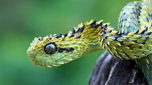

Dəri
İlan dərisi pulcuqlarla örtülüdür, hamar və quru quruluşa malikdir. İlanların qarın və bel pulcuqlarının
quruluşu fərqlidir. Dəri rəngləri çox müxtəlidir. Bəziləri bir rəngə, bəziləri isə 3–4 rəngə sahibdir.
Rəngli
ilanlar, əsasən, zəhərlidir. Ancaq zəhərli olmayan rəngli ilanlar da var. Rəngli dəri təhlükəni bildirir
və
düşmənləri qorxutmaq üçün istifadə olunur, amma bu o demək deyil ki, birrəngli ilanların dəriləri
qorunmaq üçün
əlverişsizdir. Birrəngli ilanların rəngi daha çox bozumtul, qəhvəyi və qara rəngli olur ki, bu rənglər
də
torpaqda, qumda, daşda gizlənmək üçün (kamuflyaj) ideal rənglərdir.
Dəri dəyişdirmə
Bir
çox canlı kimi ilanlar da
dəri dəyişdirir. Köhnə dəri ağız tərəfdən cırır, ilan daş, ağac kimi obyektlərə sürtünərək dərisini
çıxardır. Bu
prosesin bir neçə funksiyası var. İlk növbədə ilan köhnə dəridən azad olur, həm də parazitlərdən
təmizlənir.
